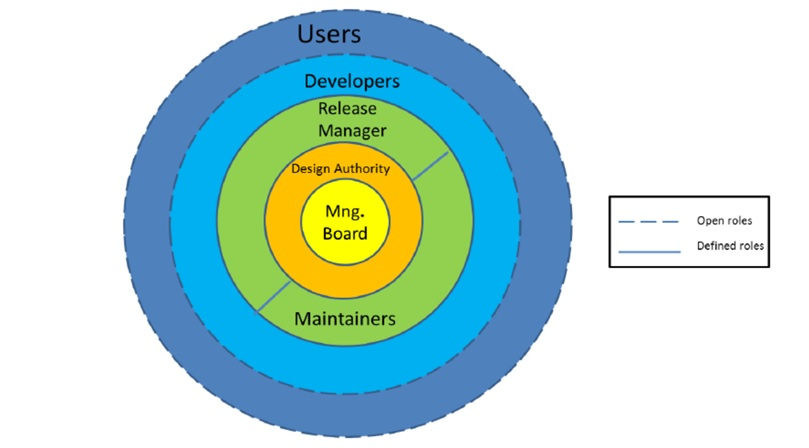
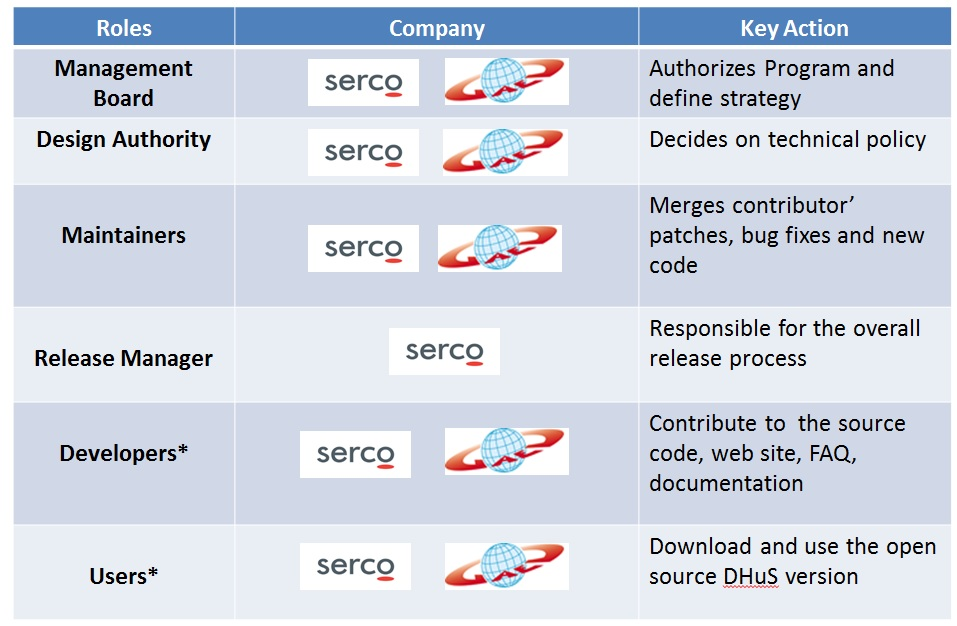

Governance Model
The governance model describes the roles that project participants can take on, the communication and decision making processes.
1. Overview
The governance model ensures that the DHuS OSF project is developed in a structured and transparent way. The following roles and processes have been adopted to strike a balance between encouraging anyone to make a contribution at any time and maintaining a high level of quality in the software. In addition, it describes the basic rules for participation in the project and the processes for communicating and sharing within the project team and community. In other words it is the governance model that regulates an open source project.
2. Roles and Responsibilities
The goal of this section is to make it clear who manage the project, who can contribute, how they may contribute, and how they should behave if they wish to directly influence the project. There are quite a few ways to participate in the DHuS OSF project and community, and not all of them involve contributing source code to the project. Simply participating filing bug reports or enhancement requests is an incredibly valuable form of participation. A widely used model for depicting the roles of Open Source project is the so-called onion model. The “onion-model” diagram below shows the main roles. These are divided in two main categories:
1.Defined roles : are set by default as Management Board, Design Authority, Maintainers, and Release Manager. In the diagram below they are represented by circles in continuous line.
2.Open Roles: are available and open to all. They are Developers and Users. In the diagram below they are represented by circles in dashed line.
In the picture this difference is highlighted respectively with dashed lines and continuous lines. At the heart of Open Source DHuS community is the Management Board, who makes strategic decisions defined in the Roadmap. In the next onion layer is the Design Authority, a group of core members that coordinate the project deciding on technical policies. The next onion layer consists of Maintainers and Release Manager. Maintainers regularly merge contributors’ patches, bug fixes and new code. Release Manager supervises the overall release process management. Developers contribute to the source code, web site content, FAQs, screenshots, documentation. The outmost onion layer consists of users, who do not actively participate in the development, but who download and use the software. Users are the largest group. As said, the open roles are not static for example a user may at one point become a developer.
The following table clarifies main roles and actions involved in the governance model.

2.1 Management Board
Management board authorizes program and makes strategic decisions about community processes. It is the management board's job to resolve disputes within the community and to ensure that the project is able to progress in a coordinated way. In turn, it is the community's job to guide the decisions of the management board through active engagement and contribution. Management board sets the strategic objectives of the project and communicates these clearly to the community. It also has to understand the community as a whole and strive to satisfy as many conflicting needs as possible, while ensuring that the project survives in the long term. The key is to ensure that, as the project expands, the right people are given influence over it and the community rallies behind its vision.
How to become one: is self-appointed.
2.2 Design Authority
Design Authority decides on technical policies for the project as package selection, packaging policy, installation systems and processes, components, dependencies. Design authority has made several valuable contributions to the project and is relied upon to both write code directly to the repository and screen the contributions of others. It is a design authority’s job to be aware of the community’s needs and collective objectives, and to help develop or elicit appropriate contributions to the project. Design authority gives control over specific areas of responsibility, and assigns rights to directly modify certain areas of the source code to other roles.
How to become one: Be appointed by the Management Board.
2.3 Maintainers
They are responsible for merging contributors’ patches, bug fixes, and new code from the development branch of the source tree into the stable branch. Maintainers are responsible for making sure that these contributions do not break the build. A Maintainer is responsible for his module (by having access to the source tree), and for granting check-in privileges to developers. They also act as the “gatekeeper” of the module, helping to ensure quality across the build. Typically, a maintainer will focus on a specific aspect of the project, and will bring a level of expertise and understanding that earns them the respect of the community.
How to become one: Be appointed by the Design authority.
2.4 Release Manager
The Release Manager is responsible for the overall release process. In addition to making sure that releases are planned correctly and completed on schedule. Release manager takes care of shepherding a release from an initial community consensus to make it to final distribution. He makes the release candidate available for testing. Every release should be tested on as many platforms and by as many users as possible. The source code and build process must comply with the legal and intellectual property requirements for a valid release, and the project must have the infrastructure in place to correctly sign the release artefacts. After formal IVV process, the Release Manager has to create the final release after the release candidate has been approved. This ensures that the quality of the software and the associated documentation remains high and the conceptual integrity of the project is maintained.
How to become one: Be appointed by the Design Authority.
2.5 Developers
Developers are community members who contribute to the DHuS OSF project in the form of source code patches, new code, or bug reports, but could also include web site content like articles, FAQs, or screenshots1. They make valuable contributions, such as those outlined in the list below, but generally do not have the authority to make direct changes to the project code. Developers engage with the project through communication tools, such as email lists, and via reports and patches attached to issues in the issue tracker. Some developers will already be engaging with the project as users, but will also find themselves doing one or more of the following activities as: supporting new users reporting bugs, identifying requirements,supplying graphics and web design, programming, assisting with project infrastructure, writing documentation, fixing bugs, adding features.
How to become one: submit patches, bug reports, requests via GitHub. Maintainers are responsible for merging contributor’s patches and bug fixes and website updates. In the registration phase the developer accepts licensing and terms conditions for the usage.
2.6 Users
Users are the people who download and use the DHuS OSF. Users are making use of the software, reporting bugs, making feature requests for next releases and suggestions. They are the most important members of the community: without them, the project would have no purpose. Anyone can be a user; there are no specific requirements. Users should be encouraged to participate in the life of the project and the community as much as possible. User contributions enable the project team to ensure that they are satisfying the needs of those users. Common user activities include (but are not limited to): evangelising about the project, informing developers of project strengths and weaknesses from a new user’s perspective, providing moral support (a ‘thank you’ goes a long way) Users who continue to engage with the project and its community will often find themselves becoming more and more involved. Such users may then go on to become developers, as described above.
How to become one: Download the DHuS OSF and use it.
3.Support
All participants in the community are encouraged to provide support for new users within the project management infrastructure. This support is provided as a way of growing the community. Those seeking support should recognise that all support activity within the project is voluntary and is therefore provided as and when time allows.
4. Decision making process
During the first phase, the DHuS OSF project is led by a benevolent dictator, which is a member of the Management Board (chosen by the Management Board itself). It is also possible that governance model moves to the other end of the “control” spectrum, when the project matures. In meritocratic governance model participants gain influence over a project in recognition of their contributions. The community actively contributes to the day-to-day maintenance of the project, but the general strategic line is drawn by the benevolent dictator. It is the benevolent dictator’s job to resolve disputes within the community and to ensure that the project is able to progress in a coordinated way. In turn, it is the community’s job to guide the decisions of the benevolent dictator through active engagement and contribution.
5. Contribution process
Anyone can contribute to the project, regardless of their skills, and there are many ways to contribute. For instance, developers can be active on the project forum and issue tracker, or they can supply patches. The various ways of contributing are described in more detail in a separate document, DHuS OSF Guidelines.
6. License
The GNU Affero General Public License is designed specifically to ensure that the modified source code becomes available to the community. It requires the operator of a network server to provide the source code of the modified version running there to the users of that server. Therefore, public use of a modified version, on a publicly accessible server, gives the public access to the source code of the modified version. The purpose of the GNU Affero GPL is to prevent a problem that affects developers of free programs that are often used on servers. The AGPL license fulfils the requirements for all of the foreseen licensing scenarios. This license is a well-known license in the Open Source Community.
Further details are available at: https://www.gnu.org/licenses/agpl-3.0.en.html